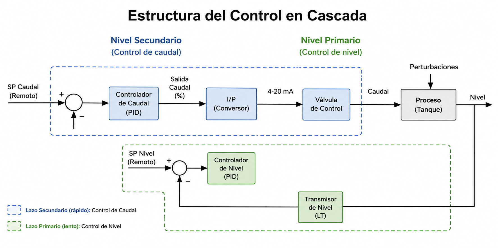
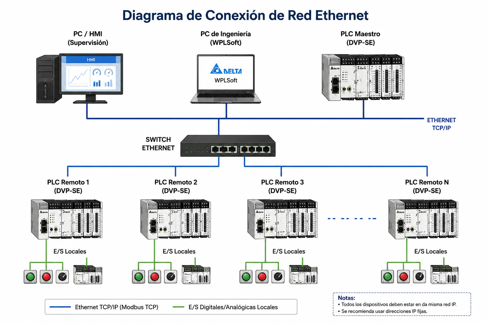

Laboratorio 5: Control en Cascada con Modbus TCP/IP
Sistema de Control de Nivel y Flujo - 2 PLCs DVP-SE + Ethernet
⏱️ Duración estimada: 6 horas académicas 👥 Modalidad: Trabajo en parejas 📚 Nivel: Avanzado - Control de Procesos Industriales 🌐 Arquitectura: Red Ethernet TCP/IP + Modbus TCP + Control en Cascada
📋 Criterios de Evaluación que se Desarrollan:
2.1.1 Programa aplicación de control y monitoreo a través de red industrial.
2.1.3 Programa control en cascada para proceso industrial.
2.1.4 Establece comunicación entre equipos del lazo de control, aplicando estrategias de solución en base a la configuración.
2.1.5 Respeta normas de seguridad, higiene y ambiente antes y durante el desarrollo de las actividades.
🎯 Objetivos de la Práctica
Implementar control en cascada con dos lazos de control anidados (nivel → flujo) para proceso de bombeo.
Configurar comunicación Modbus TCP/IP entre dos PLCs Delta DVP-SE usando red Ethernet.
Asignar direcciones IP estáticas a ambos PLCs en la misma subred (192.168.1.x).
Programar PLC Maestro (DVP-SE #1) para control de nivel de tanque superior y gestión de red Modbus TCP.
Programar PLC Esclavo (DVP-SE #2) para control de flujo de bomba y respuesta a comandos del maestro vía Ethernet.
Configurar switch Ethernet industrial para conexión de PLCs y HMIs en red LAN.
Diseñar HMI Maestro para supervisión de nivel, setpoints globales y alarmas del sistema.
Diseñar HMI Esclavo para monitoreo local de flujo, diagnóstico de bomba y control manual.
Intercambiar datos en tiempo real entre PLCs vía Modbus TCP: setpoint de flujo, valor medido de flujo, estado de alarmas.
Implementar estrategia de seguridad con paradas de emergencia, límites de nivel y protección de bomba.
Configurar servidor Modbus TCP en PLC esclavo y cliente Modbus TCP en PLC maestro.
Diagnosticar comunicación Ethernet mediante ping, verificación de conexión TCP y monitoreo de paquetes.
Sintonizar ambos controladores PID (nivel y flujo) considerando la dinámica del sistema en cascada.
Aplicar normas de seguridad industrial en cableado, conexión de equipos y operación del sistema.
📖 Fundamento Teórico
🔗 Control en Cascada (Cascade Control)
El control en cascada es una estrategia avanzada que utiliza dos controladores PID anidados para mejorar el desempeño del sistema cuando existen perturbaciones significativas:
📊 Estructura del Control en Cascada

Figura 1. Estructura del control en cascada.
Ventajas del Control en Cascada:
✓ Rechazo rápido de perturbaciones en el lazo secundario (flujo)
✓ Mejor estabilidad del lazo primario (nivel)
✓ Respuesta más rápida a cambios de setpoint
✓ Menor sobrepico en la variable controlada principal
🌐 Modbus TCP/IP sobre Ethernet
Modbus TCP es la versión del protocolo Modbus adaptada para redes Ethernet TCP/IP. Es el protocolo industrial más utilizado en automatización moderna:
📡 Características de Modbus TCP
Característica
Especificación
Capa de transporte
TCP/IP (Transmission Control Protocol)
Puerto estándar
502
Medio físico
Ethernet (CAT5e/CAT6)
Topología
Estrella (vía switch)
Velocidad
10/100/1000 Mbps
Direccionamiento
Dirección IP + Puerto
Arquitectura
Cliente-Servidor (Master-Slave)
Conexiones simultáneas
Múltiples (hasta 8 en DVP-SE)
💡 Ventajas de Modbus TCP vs Modbus RTU:
Mayor velocidad: 100 Mbps vs 115.2 kbps máximo de RS-485
Mayor distancia: Sin límite práctico (vía routers/switches)
Más dispositivos: Sin límite de 32 dispositivos por segmento
Integración IT: Compatible con redes corporativas existentes
Diagnóstico: Herramientas estándar de red (ping, traceroute)
Verificar polaridad de alimentación 24V DC antes de energizar
Sobrepresión en tanque
Válvula de alivio, sensor de nivel alto con parada de emergencia
Operación de bomba en seco
Sensor de nivel bajo en tanque de succión con enclavamiento
Ciberseguridad
Red aislada, sin acceso a Internet, firewall en switch
⚠️ NORMA DE SEGURIDAD OBLIGATORIA:
Siempre usar EPP (Equipo de Protección Personal): gafas de seguridad, guantes dieléctricos
Verificar que la alimentación esté OFF antes de realizar conexiones
Usar herramienta aislada y en buen estado
Mantener área de trabajo limpia y ordenada (5S)
Respetar procedimientos de bloqueo/etiquetado (LOTO - Lock Out Tag Out)
Aislar red industrial de red corporativa (VLAN o red física separada)
🔧 Materiales y Equipos
Cantidad
Elemento
Especificaciones
2
PLC Delta DVP-SE
Con puerto Ethernet integrado (10/100Base-TX)
1
Switch Ethernet
5 puertos, 10/100 Mbps (industrial preferible)
1
HMI Delta DOP-107EG
HMI Maestro (7" TFT) con Ethernet
1
HMI Delta DOP-103B
HMI Esclavo (3.5" TFT) con Ethernet
1
Bomba centrífuga DC
12V/24V DC con control de velocidad
1
Sensor de nivel
Ultrasónico o capacitivo (0-10V o 4-20mA)
1
Sensor de flujo
Turbina o electromagnético (pulsos o 4-20mA)
2
Tanques de agua
Tanque superior e inferior (capacidad 10-20L)
2
Módulo DVP06XA
Para lectura de sensores analógicos (1 por PLC)
4
Cable Ethernet
CAT5e/CAT6, RJ45, directo (1-2 metros)
1
Laptop/PC
Para programación con puerto Ethernet
1
Fuente de poder
24V DC, 5A (alimentación PLCs y sensores)
1
Fuente de poder
12V/24V DC, 3A (alimentación de bomba)
1
Software ISPSoft
Programación de PLCs Delta
1
Software ScreenEditor
Programación de HMIs Delta
1
Multímetro
Verificación de voltajes y continuidad
1
Tester de red
Verificación de cables Ethernet (opcional)
1
EPP
Gafas de seguridad, guantes dieléctricos
📋 Desarrollo de la Práctica
1 Configuración de Red Ethernet y Cableado
Objetivo: Establecer la conexión física de la red Ethernet entre los dos PLCs, switch y HMIs.
🔌 Diagrama de Conexión de Red

Configuración de Red:
IP PLC Maestro: 192.168.1.10
IP PLC Esclavo: 192.168.1.20
IP HMI Maestro: 192.168.1.30
IP HMI Esclavo: 192.168.1.40
IP Laptop: 192.168.1.100
Máscara: 255.255.255.0
Gateway: 192.168.1.1
Cables:
- CAT5e/CAT6 con conectores RJ45
- Tipo directo (no cruzado)
- Longitud máxima: 100m por segmento
📝 Procedimiento de Cableado
Preparación de cables Ethernet:
Usar cables CAT5e o CAT6 certificados
Verificar que los conectores RJ45 estén bien crimpados
Usar tester de red para verificar continuidad (si está disponible)
Longitud recomendada: 1-2 metros para laboratorio
Conexión al switch:
Conectar cable del PLC Maestro (puerto ETH) al Puerto 1 del switch
Conectar cable del PLC Esclavo (puerto ETH) al Puerto 2 del switch
Conectar cable de la Laptop al Puerto 3 del switch
Conectar cable del HMI Maestro al Puerto 4 del switch
Conectar cable del HMI Esclavo al Puerto 5 del switch
Verificación de LEDs del switch:
Cada puerto debe tener LED verde encendido o parpadeando
LED apagado = sin conexión (verificar cable)
LED naranja = velocidad 10 Mbps (aceptable)
LED verde = velocidad 100 Mbps (óptimo)
Configuración de IP en Laptop:
Ir a Configuración de Red en Windows
Configurar IP estática: 192.168.1.100
Máscara: 255.255.255.0
Gateway: 192.168.1.1
Prueba de conectividad (Ping):
Abrir CMD en laptop
Ejecutar: ping 192.168.1.10 (PLC Maestro)
Ejecutar: ping 192.168.1.20 (PLC Esclavo)
Debe haber respuesta de ambos PLCs
Si no hay respuesta, verificar:
Cables Ethernet bien conectados
LEDs del switch encendidos
IPs configuradas correctamente en PLCs
⚠️ VERIFICACIONES DE SEGURIDAD:
✅ Alimentación OFF antes de cablear
✅ Usar EPP (guantes y gafas)
✅ No doblar cables Ethernet más de 90°
✅ Separar cables de red de cables de potencia (mínimo 20cm)
✅ Usar canaletas o organizadores de cable
2 Configuración de Direcciones IP en PLCs
Objetivo: Configurar las direcciones IP estáticas en ambos PLCs DVP-SE.
⚙️ Configuración vía ISPSoft
Abrir ISPSoft y crear nuevo proyecto para PLC Maestro.
Resumen ejecutivo — Descripción breve del sistema de control en cascada con Modbus TCP/IP (máximo 300 palabras).
Introducción — Contexto del control en cascada en procesos industriales, ventajas de Ethernet industrial, normas de seguridad industrial y ciberseguridad.
Marco teórico — Control en cascada (fundamentos, sintonización), protocolo Modbus TCP/IP (arquitectura, funciones), redes Ethernet industriales, seguridad industrial y ciberseguridad (LOTO, EPP, paradas de emergencia, VLANs).
Metodología — Descripción detallada de las 10 actividades realizadas, diagramas de conexión de red, configuración de IPs, programación de PLCs y HMIs.
Resultados — Tablas de datos, gráficas de respuesta, parámetros de comunicación, métricas de desempeño de red, comparación Modbus TCP vs RTU.
Análisis y discusión — Comparación control simple vs cascada, evaluación de la comunicación Modbus TCP, análisis de seguridad implementada, fuentes de error, ventajas de Ethernet.
Conclusiones — Hallazgos principales, ventajas del control en cascada, efectividad de Modbus TCP/IP, recomendaciones.
Recomendaciones de seguridad — Lecciones aprendidas, mejoras propuestas al sistema de seguridad y ciberseguridad.
Bibliografía — Manuales Delta, normas de seguridad (OSHA, NOM), estándares de red industrial (IEC 62443), referencias de control de procesos.
Anexos — Código Ladder completo de ambos PLCs, pantallas HMI, tablas de parámetros Modbus TCP, checklist de seguridad, capturas de configuración de red.
📊 Contenido Obligatorio del Informe
Sección
Contenido
Incluir
Arquitectura de Red
Diagrama de red Ethernet
2 PLCs, 2 HMIs, switch, IPs
Configuración de Red
Tabla de direcciones IP
IPs, máscaras, gateway, puertos
Mapa de Memoria
Registros Modbus TCP
40001-40004 de cada PLC
Control en Cascada
Diagrama de bloques
PID Nivel → PID Flujo → Bomba
Parámetros PID
Kp, Ti, Td de ambos lazos
Valores finales sintonizados
HMIs
Capturas de pantalla
HMI Maestro y HMI Esclavo
Comparación
Gráficas superpuestas
Control simple vs cascada
Red Modbus TCP
Métricas de desempeño
Tiempo de ciclo, latencia, errores
Seguridad
Checklist aplicado
EPP, LOTO, paradas de emergencia
Ciberseguridad
Medidas implementadas
Red aislada, VLAN, firewall
Normativa
Normas aplicadas
NOM-029-STPS, IEC 62443, OSHA
✅ Criterios de Evaluación del Informe:
2.1.1 Claridad en la explicación de Modbus TCP/IP y arquitectura Ethernet
2.1.3 Comprensión del control en cascada y su implementación práctica
2.1.4 Documentación completa de configuración de red y resolución de problemas
2.1.5 Evidencia de aplicación de normas de seguridad y ciberseguridad
Comparación cuantitativa Modbus TCP vs RTU (métricas numéricas)
Análisis de desempeño de red (latencia, throughput, errores)
Calidad de gráficas y tablas de datos
Profundidad del análisis comparativo
Propuestas de mejora del sistema
📚 Referencias
Delta Electronics. (2023). DVP-SE Programming Manual. Delta Electronics, Inc.
Delta Electronics. (2023). DVP-SE Ethernet Communication Manual. Delta Electronics, Inc.
IEC. (2022). IEC 62443: Industrial communication networks - Network and system security. International Electrotechnical Commission.
Smith, C. L. (2010). Advanced Control Systems: Cascade Control Strategies. ISA Press.
OSHA. (2021). Control of Hazardous Energy (Lockout/Tagout) - 29 CFR 1910.147. U.S. Department of Labor.
STPS. (2022). NOM-029-STPS-2011: Mantenimiento de las instalaciones eléctricas. Secretaría del Trabajo y Previsión Social, México.
ISA. (2020). ANSI/ISA-95: Enterprise-Control System Integration. International Society of Automation.
Ogata, K. (2010). Ingeniería de Control Moderno (5ta ed.). Pearson Educación.
Lammie, M. (2019). Industrial Ethernet: A Practical Guide. Packt Publishing.
🎓 ¡Éxito en tu práctica de laboratorio!
Recuerda: La seguridad es primero. Sigue todos los procedimientos y usa tu EPP. 🌐 Red industrial segura = Proceso industrial confiable